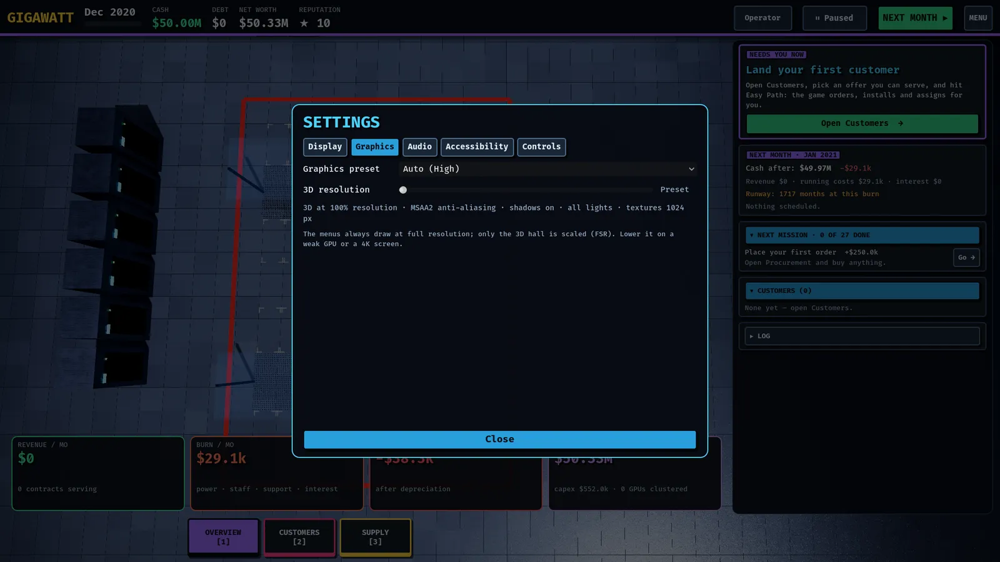

Performance and settings
Graphics presets, render scale, the Steam Deck, laptops with two GPUs, and what to do when the game runs slowly.
GIGAWATT picks graphics settings for your machine the first time it starts and shows the choice in Menu ▸ Settings ▸ Graphics as "Auto". You can change anything later; the settings are saved and apply immediately.

The settings tabs
- Display: the UI theme (four dark and three light; see Make it yours), window mode (windowed, borderless fullscreen or exclusive fullscreen), V-Sync, a frame-rate limit, UI size (Auto by default), and a "Copy diagnostics" button for bug reports.
- Graphics: the preset and the 3D resolution.
- Audio: master, music and effects volume, and the music style.
- Accessibility: colour-blind-safe cluster colours, reduced motion (no auto-orbit camera and no sliding panels) and a text-size boost.
- Controls: the keyboard, mouse and controller bindings.
Graphics presets
| Preset | What it is for |
|---|---|
| Potato | Handhelds and very old GPUs. Renders the 3D hall at reduced resolution, no shadows, painted light pools instead of real lights, flat rack faces, smaller textures. |
| Low | Integrated graphics. Shadows from the main light, a few real lights, simplified rack faces. |
| Balanced | A mid-range GPU. Soft ambient shading, more lights, full textures. |
| High | A good discrete GPU. Adds reflections, volumetric haze, finer anti-aliasing and anisotropic filtering. |
| Ultra | Everything on, with the highest-quality shadows. |
Auto chooses Low on integrated GPUs and on a Steam Deck, and High on a discrete GPU. It also lowers the 3D resolution automatically when a weak GPU drives a large screen.
3D resolution
The menus and text always draw at your screen's native resolution. Only the 3D hall is scaled, and it is upscaled with FSR, so a weak GPU on a 4K display can render the hall at a fraction of 4K and still look sharp where it matters. Drag the 3D resolution slider in Graphics; "Preset" hands control back to the preset.
Steam Deck and small screens
- The first run on a Deck selects the Low preset and a 40 FPS cap.
- On screens under 1080p the interface is scaled up so text stays at its native size. If the text is still too small, raise Accessibility ▸ Text size boost, or set Display ▸ UI size by hand.
- Everything is reachable from the controller: A selects, B goes back, LB and RB switch drawers, the sticks pan and orbit the hall.
- The game pauses and autosaves when you suspend the Deck or switch away from the window.
Laptops and PCs with two GPUs
On Linux the launcher (gigawatt.sh) checks for a broken Vulkan setup and starts the game on the Vulkan renderer. To pick a GPU:
GIGAWATT_GPU=dgpu ./gigawatt.sh # the discrete (NVIDIA or AMD) GPU
GIGAWATT_GPU=igpu ./gigawatt.sh # the integrated GPUIf an environment variable such as VK_ICD_FILENAMES points at a driver file that no longer exists, Vulkan cannot start and the game falls back to a reduced "compatibility mode" on whatever OpenGL driver is available. The launcher ignores such a stale variable for you. In compatibility mode the game shows a note on the title screen and turns off the screen-space effects.
If the game runs slowly
- Open Settings ▸ Graphics and pick a lower preset, or drag 3D resolution down. This is the biggest single saving on large or high-resolution screens.
- Open Settings ▸ Display and set a frame-rate limit. Capping at 60 (or 40 on a handheld) saves battery and keeps fans quiet.
- Very large halls and campuses cost more: zoom in when you are inspecting racks, because far-away labels, small parts and cables are hidden at a distance.
- Press Copy diagnostics in Display and paste the result into a bug report. It lists your GPU, driver, window size and settings.
The game also drops to a low frame rate while it is paused and untouched, and to a minimum while its window is in the background.
Where the files live
Settings, saves and the log are in the game's user data folder (on Linux ~/.local/share/godot/app_userdata/GIGAWATT/): settings.cfg, saves/, and logs/gigawatt.log, which records the renderer and GPU on every start.
Found a mistake or something missing? Edit this page on GitHub or ask in Discussions.